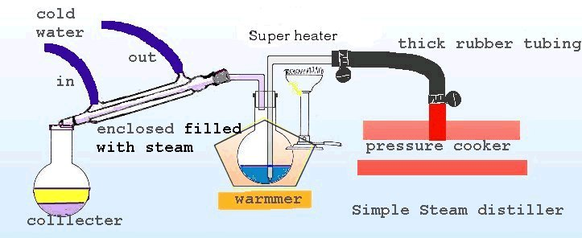

The product comes across to the collector in the form of a clear free
base oil floating on top of distilled water, if HCl is added and the pH
adjusted to 7.0, the HCl salt is produced and the solution may be evaporated
to give the solid product.
Additional
information is provided by placebo
A
link to the hive concerning steam distilling

Here are some details for chili,
After the reaction is completed, you may desire to filter out the RP
although this is not necessary, either way the post reaction mixture is
treated with NaOH, bringing the pH up over 12.5.
This is then placed in the steaming flask and the pressure cooker is
turned on, the steam is allowed to bubble through the alkaline reaction
mixture carrying Chili free base and steam to the cooling condenser,
condensed into a liquid and drips into the collector vessel.
To make the process more efficient the steaming flask is warmed up
in the above example a warming tray is used.
It is important that the steam is still very hot when reaching the
steaming flask, so keep the distance between the source of the steam and
the flask short, and well insulated.
Use a large steaming flask and don't fill it past 1/2 way to prevent
the alkaline solution from splashing up and contaminating the steam
in the condenser.
You may have seen the term splash-head on the hive. A splash-head is
designed to prevent this from occurring.
You can use a separatory funnel before steaming to remove the NaOH water and wash the free base, although this entire process is avoided if you use steam , that is why the steam was initially introduced.
An advanced form of this device would use the following modifications,
these are designed to give a consistent temper steam and a hotter steam
and to maintain the temperature of the steam constant until it leaves the
steaming flask.
First the steam is re-heated by a gas flame before it enters the steam
flask
Second the Steam flask is enclosed and surrounded by steam to maintain
it at the proper temperature.
These two modifications will give a more pure free base and will allow
less water into the condenser , as well as make the process much faster.

If you have access to equipment specific glassware is available to streamline your designs, or the last picture is of a metal super steamer available commercially at a lab supply.